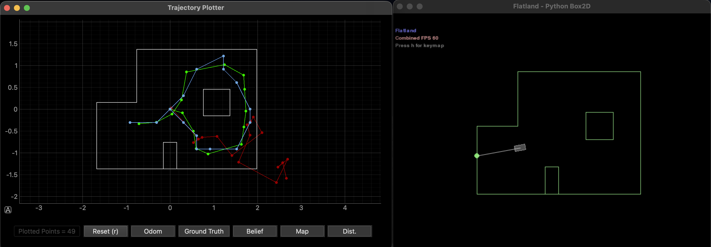
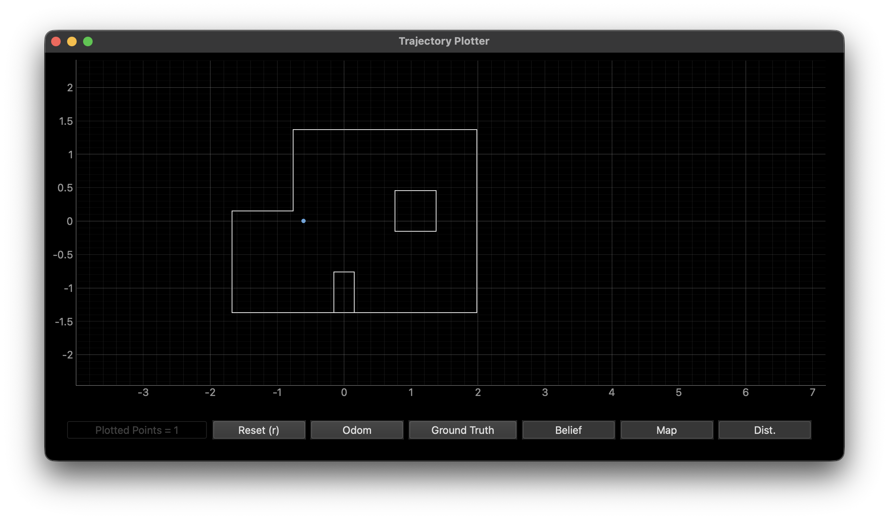
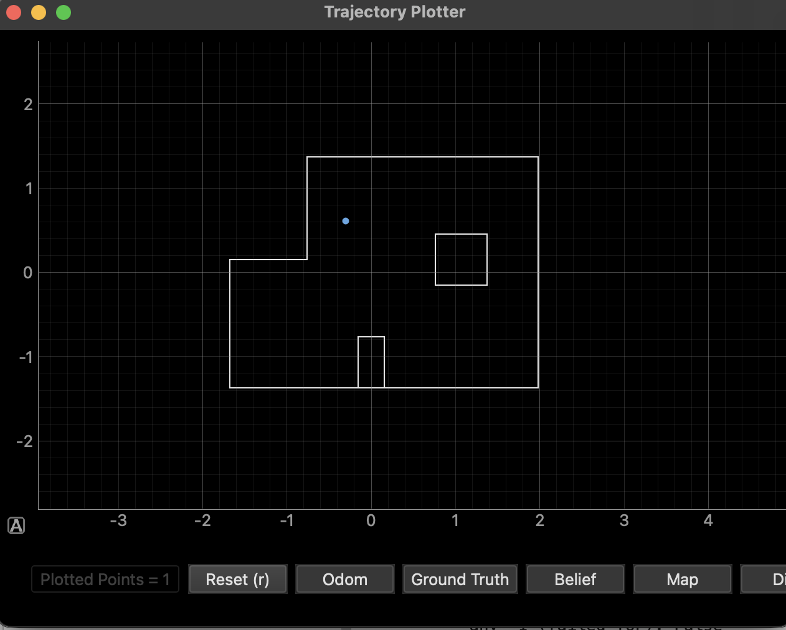
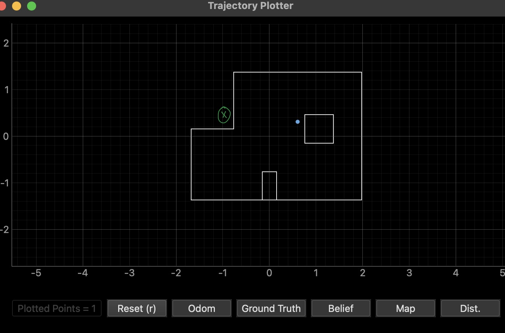
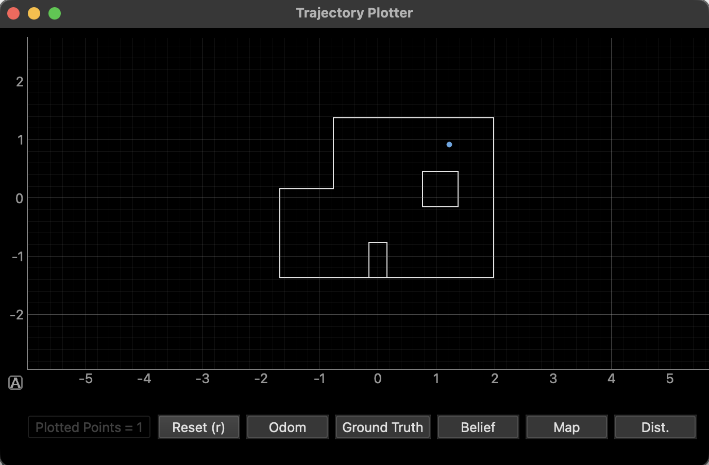

1. Objective
Implement grid localization on the physical robot using the Bayes filter update step only (uniform prior), with 18 range observations per 360° scan. The estimated belief is compared to hand-measured ground truth at four marked poses on the course map.
2. Simulation Verification
Before running on hardware, the provided lab11_sim.ipynb notebook was run to verify the filter pipeline and visualization tooling. The simulation confirms that odometry (red) drifts substantially while the Bayes filter belief (blue) tracks ground truth (green) throughout the trajectory.

Simulation verification: Bayes filter belief (blue) closely follows ground truth (green), while odometry (red) drifts significantly.
3. Real Robot: Observation Pipeline
The core addition for Lab 11 is implementing RealRobot.perform_observation_loop() inside lab11_real.ipynb. The method:
- Subscribes to BLE notifications, sends START_SCAN to the Artemis, and waits for the full 360° scan to complete.
- Requests data via GET_SCAN_DATA and parses packets of the form A:<angle_deg>|D:<dist_m>.
- Requires exactly 18 readings; raises a RuntimeError if the scan is incomplete (protects against requesting data before the robot finishes turning).
- Reorders ranges for clockwise physical rotation: the mapper expects counter-clockwise bearings [0°, 20°, …, 340°], so index 0 is kept at 0° and indices 1–17 are reversed.
The same step-and-scan turning mechanism from the wall-mapping lab was reused here.
def perform_observation_loop(self, rot_vel=120):
# BLE notify, START_SCAN, time.sleep to allow full scan to finish
# GET_SCAN_DATA, wait until len(raw_packets) >= expected_obs
# Parse A:|D: packets into angles_deg, dists_m
if len(dists_m) != expected_obs:
raise RuntimeError(
f"Incomplete scan data: expected {expected_obs}, got {len(dists_m)}"
)
# Robot rotates CW; mapper expects CCW order [0, +20, ..., +340]
dists_ccw = [dists_m[0]] + list(dists_m[1:][::-1])
angles_ccw = [angles_deg[0]] + list(angles_deg[1:][::-1])
sensor_ranges = np.array(dists_ccw)[np.newaxis].T
sensor_bearings = np.array(angles_ccw)[np.newaxis].T
return sensor_ranges, sensor_bearings 4. Configuration Tuning
sensor_sigma in config/world.yaml was tuned to balance sensitivity to real ToF noise versus over-smoothing the likelihood. A larger value makes the update more tolerant of outlier readings and occasional failed measurements. After experimentation, sensor_sigma = 0.4 performed well across most runs. All experiments used 18 observations and ray_tracing_length: 6 m by default, except at (5, −3) where targeted adjustments were explored.
Firmware note: The VL53L1X was configured in short distance mode in the Lab 11 Arduino sketch. This maximizes sample rate but can limit usable range on long return paths. A sufficiently long time.sleep after START_SCAN ensures all 18 packets are logged before GET_SCAN_DATA is called.
5. Marked Poses and Results
The robot was placed at four marked poses on the course map, each with a nominal heading of 0°. Ground truth is measured in feet (1 ft ≈ 0.3048 m). For each pose, the filter was initialized with a uniform belief, one observation loop was performed, and loc.update_step() was run to compute the posterior.
| Pose (ft) | Ground Truth (m) | Peak Belief (x, y, θ°) | Peak Prob | Notes |
|---|---|---|---|---|
| (−3, −2) | (−0.914, −0.610) | (−0.610, 0.000, 50.0°) | 0.950 | Clean result — geometrically distinct corner |
| (0, 3) | (0.000, 0.914) | (−0.400, 0.600, 50.0°) | 0.800 | Good match — open-center landmark (see plot) |
| (5, −3) | (1.524, −0.914) | Off-true cell | Hardest pose — perceptual aliasing (see §6) | |
| (5, 3) | (1.524, 0.914) | (1.219, 0.914, 150.0°) | 0.624 | Solid result — corner with distinct wall geometry |
Pose (−3, −2) ft

Simulator view — belief after update step.

Notebook posterior — peak at (−0.610, 0.000, 50°), p=0.950.
This geometrically distinct corner produced a clean, high-confidence estimate (p = 0.950). The 18-ray scan provides a unique angular signature: two nearby walls at perpendicular angles create a range profile that is hard to replicate elsewhere on the map, so the update step converges strongly to the correct cell.
Pose (0, 3) ft

Simulator view — belief concentration after update.

Notebook posterior — update step narrows belief to the correct region.
A near-center position with good angular diversity — the robot can "see" all four walls from this location, giving the 18-ray scan enough discriminative information to converge to the correct cell.
Pose (5, −3) ft

Belief plot for (5, −3) — the MAP estimate lands off-true spot.
This pose produced the weakest localization result. The outer-wall geometry near (5, −3) is not unique enough at 20° scan resolution — a nearby cell with similar ray-cast distances can outscore the ground-truth cell after the update. See §6 for a full breakdown.
Pose (5, 3) ft

Simulator view — belief after update step.

Notebook posterior — peak at (1.219, 0.914, 150°), p = 0.624.
The corner geometry at (5, 3) provides discriminative ray casts — two short wall distances at roughly perpendicular angles give the filter enough information to pinpoint the correct cell with a peak probability of 0.624. The lower confidence compared to (−3, −2) likely reflects slightly more open sight lines on one side, which allows a small amount of probability mass to spread to adjacent cells.
6. Discussion: Why (5, −3) Was the Hardest
At (5, −3), the maximum a posteriori cell sometimes landed in a visually "similar" pocket near an outer wall( the green x in 5,-3 in image above). From the robot's ToF view, a wrong (x, y, θ) could still produce a passable match to the cached ray cast — classic perceptual aliasing at a coarse 20° scan resolution.
Several experiments were run to improve this result:
- Increasing observations_count brought the estimate closer, but not exact.
- Reducing ray_tracing_length for targeted runs had a similar effect.
Root causes:
1. Sparse angular sampling (18 directions, 20° steps): parallel
outer walls at comparable ranges look alike from different positions.
2. Sensor limits: Short distance mode truncates or fails on the
farthest wall returns, so certain beams carry less discriminative information and
inter-cell similarity increases.
3. Invalid readings: ToF failures logged as −1
down-weight the correct cell because the likelihood model doesn't explicitly
handle outliers.
7. Takeaways
- The update-only Bayes filter with a uniform prior is highly sensitive to how well the observation vector is aligned with the map (rotation direction, beam ordering, heading at time of scan).
- Tuning sensor_sigma on hardware is necessary; a single simulation-derived value is rarely transferable directly.
- A single difficult pose is expected in environments with degenerate symmetry; finer angular resolution, more beams, or explicit outlier handling would be the natural next steps.
AI usage: AI was used to build this site and to help format and structure the lab writeup.